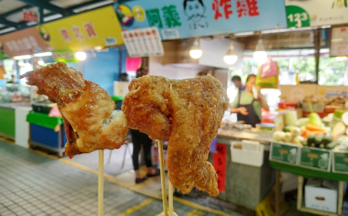
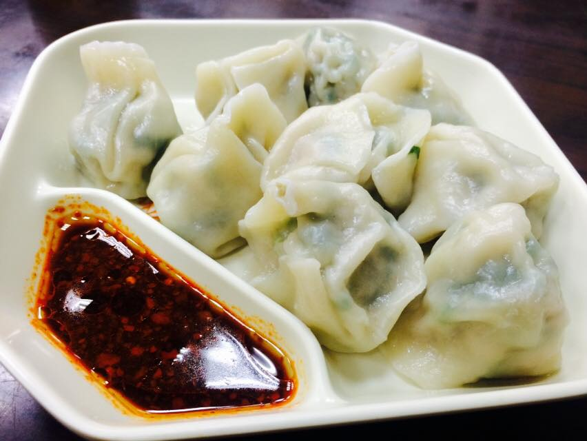
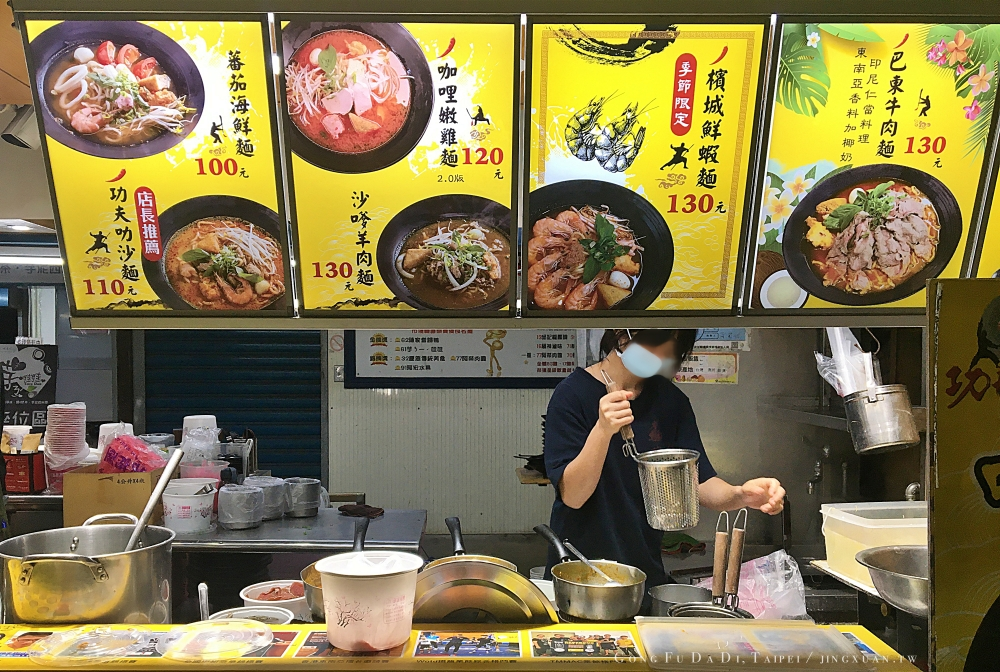
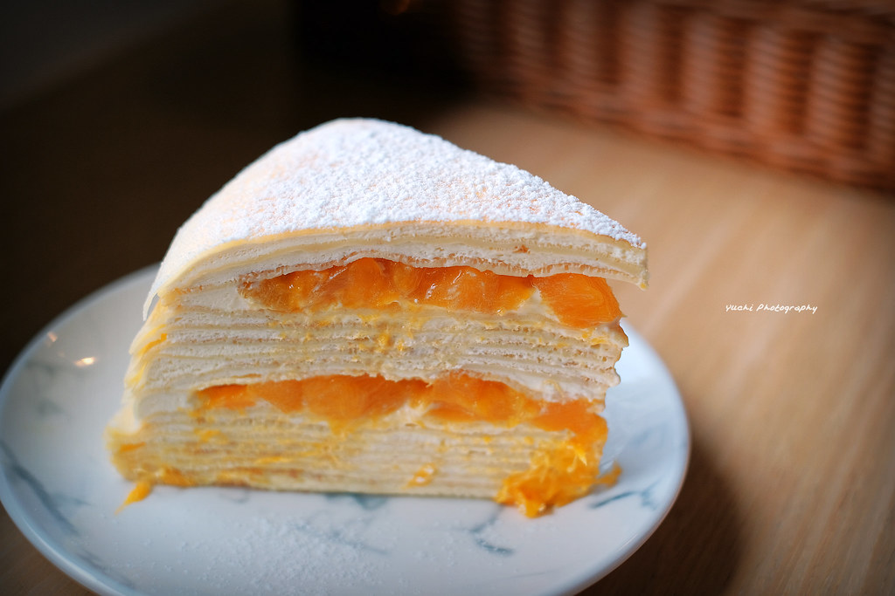
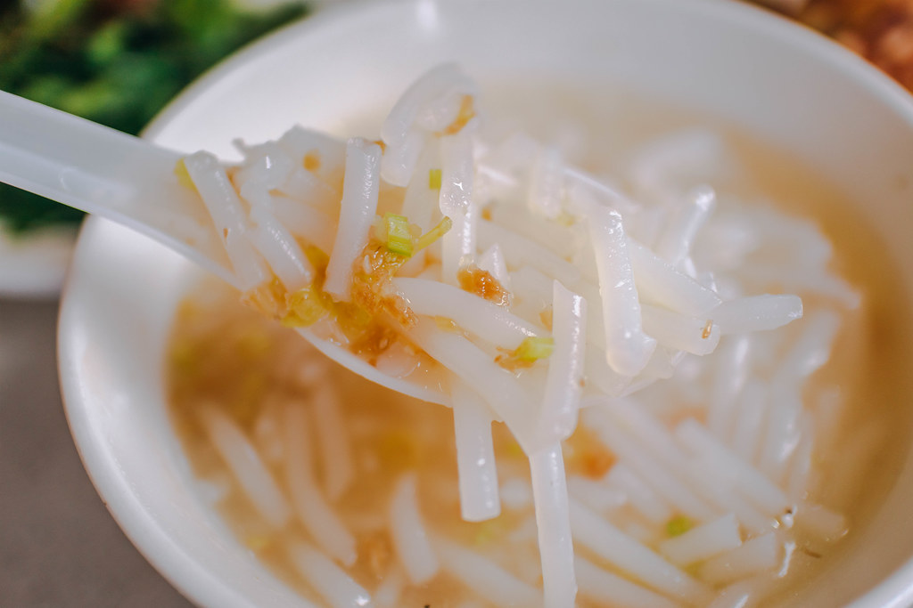

-

號稱汐止最強炸雞，從下午三點半開始，一直到完售，阿義炸雞幾乎都在排隊，有時候還不到六點就賣完了，真心不誇張！秀峰路與號汐科路交叉口剛炸好的炸雞。香氣四溢，肌肉炸的金黃閃亮，感覺都在發光了!!
網上大家最推薦的就是阿義炸雞的『雞塊』，除了調味醃料相當特別，除了明顯蒜味外，應該也有添加了獨家的醃料。另外，雞塊沒有裹粉也沒有皮，因此炸起來其實較乾，不過雖然偏乾但並不柴，還蠻唰嘴的非常適合下酒。 雞翅炸得熟度控制相當好，輕輕一咬就骨、肉分離。一樣粉裹並不重，炸雞就是要這種剛起鍋熱燙酥脆的口感才好吃！
阿義炸雞
-

一次至少要點十顆。如果低於十顆的話就無法點唷~咬下水餃皮不會太厚，薄薄的~而裡面的內餡味道非常鮮美可口。整體而言是汐止cp值蠻高的美食。 水餃皮偏薄，肉汁多。建議趁熱吃，冷掉就會有點油，配上辣醬有點像吃紅油炒手，滑順多汁的口感真的很美味呢~
水餃都是現場包、現煮的，皮吃起來比較軟濕，但又不失水餃皮的味道，雖然沒有不少人愛的「咬」勁，但個人覺得還不錯。 肉餡方面咬下湯汁的口感相當優，咀嚼時肉的札實度也很夠，味道也理想
阿亮水餃
-

由汐止散打王高瑋濂教練一手創立，2010年成立功夫大帝餐飲店於汐止觀光夜功夫大帝的叻沙麵，叻沙麵的湯頭很香很濃郁，吃得出來是用香料去熬煮的，加上一點微辣，真是讓人欲罷不能啊!! 推薦檳城鮮蝦麵，屬於馬來西亞北部檳城的傳統美食，功夫蝦麵蝦高湯比咖哩湯味道更讓人著迷，湯頭帶有恰到好處的海鮮味，雖說味道並非太道地，但也不失為一道稱職的風味蝦麵。特別喜歡功夫拉麵，有韌性又彈牙，不是那種泡在湯裡會軟綿的麵體。
功夫大帝
-

店外有面非常搶眼的彩色塗鴉牆，外觀建築濃厚日系風格，從店外屋簷到店內裝潢也用得很日系，有一秒到日本的感覺！主打抹茶甜點的隱家茶寮，喜歡抹茶的朋友可以考慮到這一訪試試，環境很清幽，很適合朋友聚會聊天呢！
隱家茶寮
-
金龍市場米粉湯已有二十多年歷史，特選豬大骨加上嘴邊肉一起熬煮湯頭，與粗米粉搭配甘甜爽口。另一家位於汐止分局側門口的街仔內米粉湯，以油蔥酥提味，放點自製辣醬，吃起來相當過癮。兩攤都只賣到下午1點，想吃要趁早。
